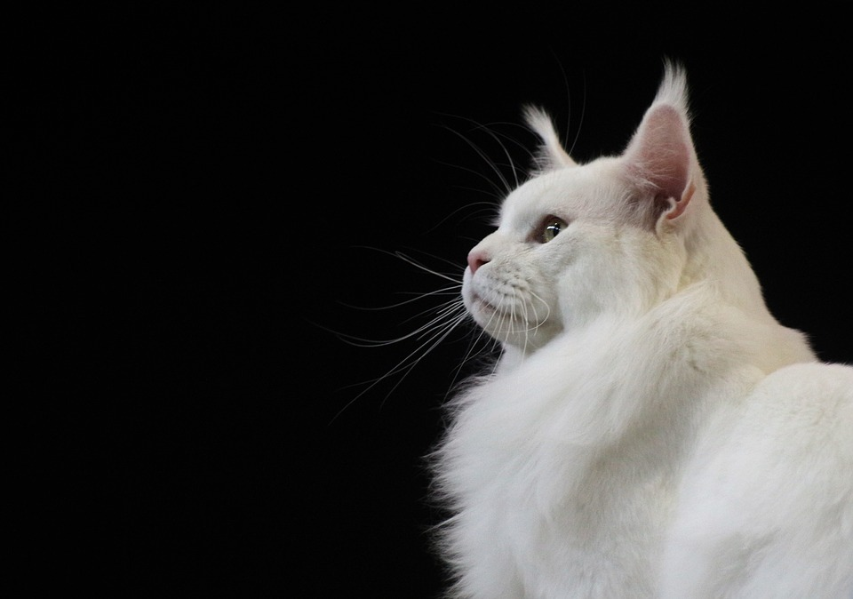
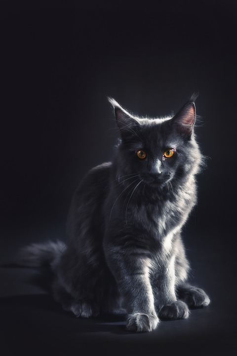
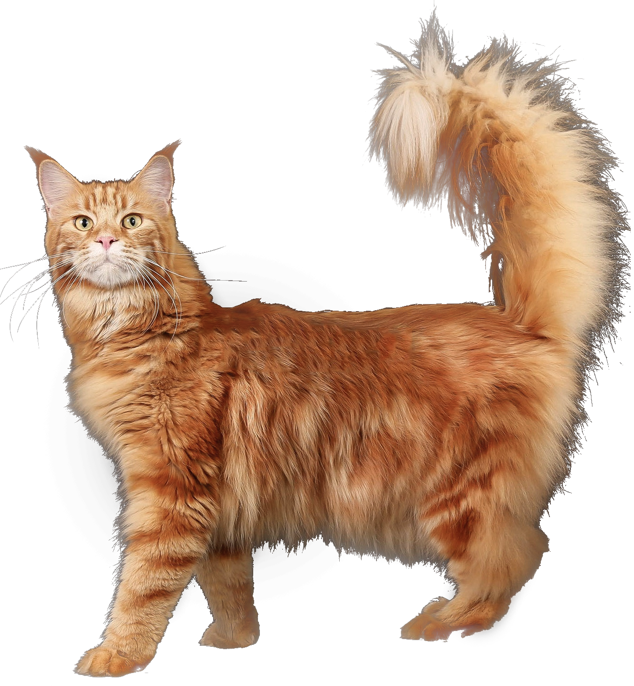

Питомцы
Все представители нашего питомника имеют ветеринарный паспортс отметками о прививках и документ с родословной



Особенности породы
Мейн-Кун - это порода, которая вызывает к себе уважение. Приобретая в свой дом этого питомца,вы получите умное животное, которому нет равных
Выполняет команды как дрессированная собака
Легко уживается в семьях с детьми или другими животными

Внешний вид этой кошки похож на дикую рысь
Вес может достигать 12 кг, а длина 1 м